Statisztika 2. előadás
Mire szolgál, mit mér a Pearson-féle korreláció?
Mik a korlátai?
Mi az elemzés menete?
Milyen értékek között mozog, és hogyan értelmezzük a Pearson-féle \(r\) mutatót?
| Mennyiség | Jelölés | Jelentés |
|---|---|---|
| Sokasági korreláció | \(\rho\) (“ró”) | Ismeretlen lineáris asszociáció a sokaságban |
| Mintabeli korreláció | \(r\) | Mintában megfigyelt lineáris asszociáció; \(\rho\) becslése |
\[ \overline{x} \rightarrow \mu \qquad p \rightarrow P(\xi=x_i) \qquad s^* \rightarrow \sigma \qquad r \rightarrow \rho \]
Az \(r\) értéke akkor is változik mintáról-mintára, ha a sokaságban nem változik az összefüggés.
Hipotézisvizsgálat alapkérdése: a megfigyeléseink lehetnek-e a véletlen művei
Ebban az esetben: lehetséges-e úgy megfigyelni ekkora korrelációt egy mintában, ha a sokaságban függetlenek egymástól a változók?
Kétoldali próba hipotézisei:
\[ H_0: \rho=0 \\ H_1: \rho\ne0 \]
Egyoldali próba is lehetséges (ha előre így fogalmazzuk meg):
\[ H_1: \rho>0 \qquad\text{vagy}\qquad H_1: \rho<0 \]
\[ t = r\sqrt{\frac{n-2}{1-r^2}}, \qquad df=n-2. \] Feltétel: normális eloszlású változók
Értelmezéshez:
Tegyük fel, hogy \(r=0.20\)
| Mintanagyság | Kétoldali p-érték | Következtetés |
|---|---|---|
| \(n=25\) | \(p\approx .34\) | Gyenge érv \(\rho=0\)-val szemben |
| \(n=500\) | \(p<.001\) | Erős érv \(\rho=0\)-val szemben |
Jó gyakorlat
A kis p-érték mérsékelt korrelációnál is kijöhet, ha a minta nagy. Közöljék és értelmezzék az \(r\) értékét, a hozzá tartozó \(p\)-értékkel együtt.
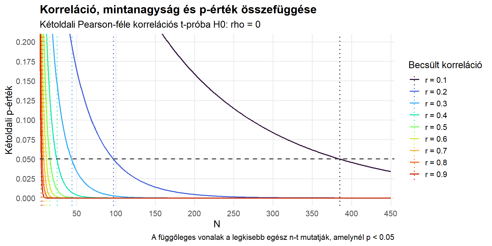
Egy \(n=80\) hallgatói mintában:
\[ r_{\text{tanulás, pontszám}}=0.35 \]
1: hipotézisek
\[ H_0:\rho=0 \qquad\text{vs}\qquad H_1:\rho\ne0. \]
2: tesztstatisztika
\[ t=0.35\sqrt{\frac{80-2}{1-0.35^2}} \approx3.30, \qquad df=78. \]
3: eredmény
\[ p\approx0.0015 \]
4: következtetés
Elvetjük \(H_0\)-t \(\alpha=0.05\) szignifikanciaszint mellett. Az adatok pozitív lineáris sokasági korrelációra engednek következtetni.
Közöljék a kontextust, az irányát, nagyságát, bizonytalanságot.
Például:
A tanulásra fordított heti idő pozitívan függött össze a vizsgaeredménnyel. (\(n=80\), \(r=0.35\), \(df=78\), \(p=0.002\)). Azok a hallgatók, akik több készülésről számoltak be, várhatóan több pontot kaptak. Az összefüggés közepesen erős.
Még jobb, ha a becsült korreláció mellé konfidenciaintervallumot is meg tudnak adni:
\(r=0.35\), 95% CI \([0.14,0.52]\), \(p=0.002\).
Ez azt is megmutatja, milyen értékek közé esik nagy megbízhatósággal a sokasági korreláció.
Az előző alkalomról: a Pearson-féle \(r\) KÉT metrikus (számszerű) változó LINEÁRIS együttjárását írja le.
Ehhez képest:
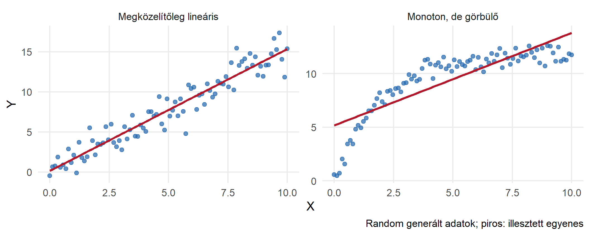
Melyik ábrán látható kapcsolat jellemezhető jobban egy egyenessel?
Példa: elképzelhető olyan sokaság, amelyben a jövedelem és elégedettség közötti kapcsolat eleinte erősebb, majd ellaposodhat.
\[ r_s = r(R(X){,}R(Y)) \\ \text{vagy, ha nincs holtverseny} \\ r_s = 1-\frac{6\sum_{i=1}^{n} {d_i^2}}{n(n^2-1)} \]
| Hallgató | Idő \(X\) | \(X\) rangja | Pontszám \(Y\) | \(Y\) rangja | \(d_i\) | \(d_i^2\) |
|---|---|---|---|---|---|---|
| A | 2 | 50 | ||||
| B | 4 | 65 | ||||
| C | 6 | 60 | ||||
| D | 8 | 80 | ||||
| E | 10 | 90 |
Rangsorolják a hallgatókat külön-külön a tanulásra fordított idő és a pontszám alapján!
| Hallgató | Idő \(X\) | \(X\) rangja | Pontszám \(Y\) | \(Y\) rangja | \(d_i\) | \(d_i^2\) |
|---|---|---|---|---|---|---|
| A | 2 | 1 | 50 | 1 | ||
| B | 4 | 2 | 65 | 3 | ||
| C | 6 | 3 | 60 | 2 | ||
| D | 8 | 4 | 80 | 4 | ||
| E | 10 | 5 | 90 | 5 |
Számítsák ki a két rangérték különbségét és ennek négyzetét, majd végül ez utóbbi összegét!
| Hallgató | Idő \(X\) | \(X\) rangja | Pontszám \(Y\) | \(Y\) rangja | \(d_i\) | \(d_i^2\) |
|---|---|---|---|---|---|---|
| A | 2 | 1 | 50 | 1 | 0 | 0 |
| B | 4 | 2 | 65 | 3 | -1 | 1 |
| C | 6 | 3 | 60 | 2 | 1 | 1 |
| D | 8 | 4 | 80 | 4 | 0 | 0 |
| E | 10 | 5 | 90 | 5 | 0 | 0 |
Itt \(\sum d_i^2=2\), és nincs azonos rang (holtverseny)
\[r_s=1-\frac{6\sum d_i^2}{n(n^2-1)}=1-\frac{12}{5(25-1)}=0{,}90.\]
Ez a rangkülönbség-képlet csak holtverseny nélküli esetben használható ilyen alakban.
Ha két válaszadó ugyanazt az értéket kapja, az érintett rangok átlagát adjuk nekik.
| Válaszadó | Politikai érdeklődés (1–5) | Rang |
|---|---|---|
| A | 1 | 1 |
| B | 2 | 2,5 |
| C | 2 | 2,5 |
| D | 4 | 4 |
| E | 5 | 5 |
A két 2-es érték rangja \((2+3)/2=2{,}5\).
Holtverseny esetén: Pearson-féle korrelációt számolunk a rangokon
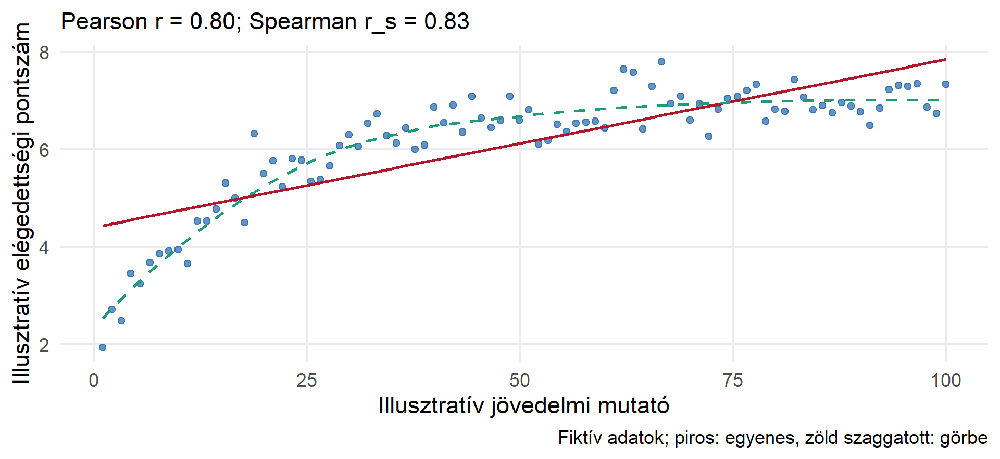
A két együttható másfajta összefüggést számszerűsít.
| Kutatási helyzet | Célszerű kiindulás |
|---|---|
| Két mennyiségi változó, nagyjából egyenes mintázat | Pearson \(r\) |
| Sorrendi skálájú változók és monoton mintázat | Spearman \(r_s\) |
| Két mennyiségi változó, monoton, de látványosan görbült kapcsolat | Spearman \(r_s\); a görbét külön is mutassák |
| U alakú kapcsolat | Egyetlen \(r\) vagy \(r_s\) nem megfelelő összefoglaló |
| Néhány kirívó megfigyelés | Vizsgálják meg az adatokat; Spearman csökkentheti, de nem szünteti meg automatikusan a problémát |
Az egyetlen ötfokozatú Likert-skála ordinális, egy többitemes indexet olykor közelítőleg folytonosként kezelünk, de ezt indokolni kell.
A nullhipotézis: \(H_0:\rho_s=0\); kétoldali alternatíva: \(H_1:\rho_s\ne0\).
\[ t = r_s \sqrt\frac{n-2}{1-r_s^2}; \qquad df=n-2 \]
Közlés mintája: „A két ordinális változó között negatív monoton kapcsolatot mértünk, \(r_s=\dots\), \(n=\dots\), \(p=\dots\).”
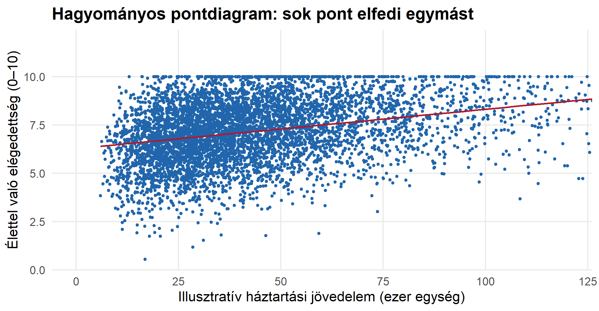
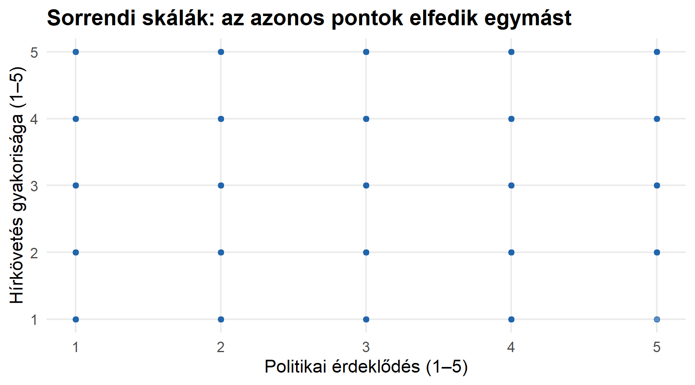
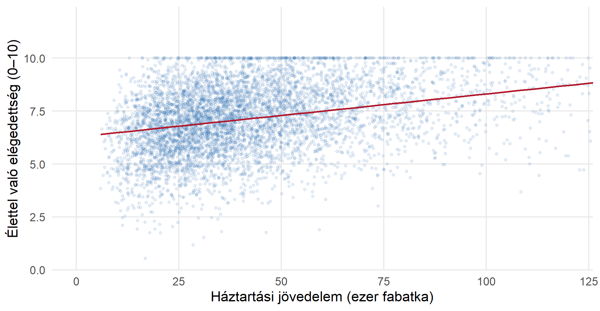
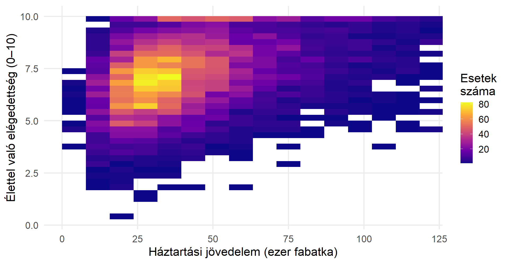
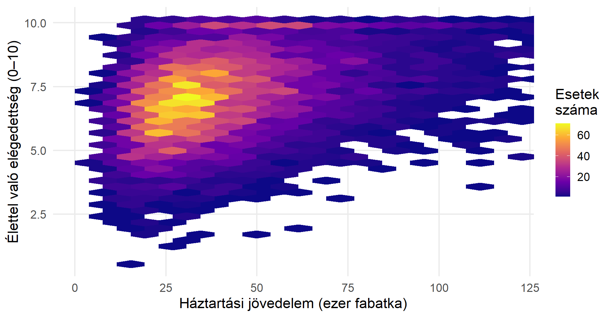
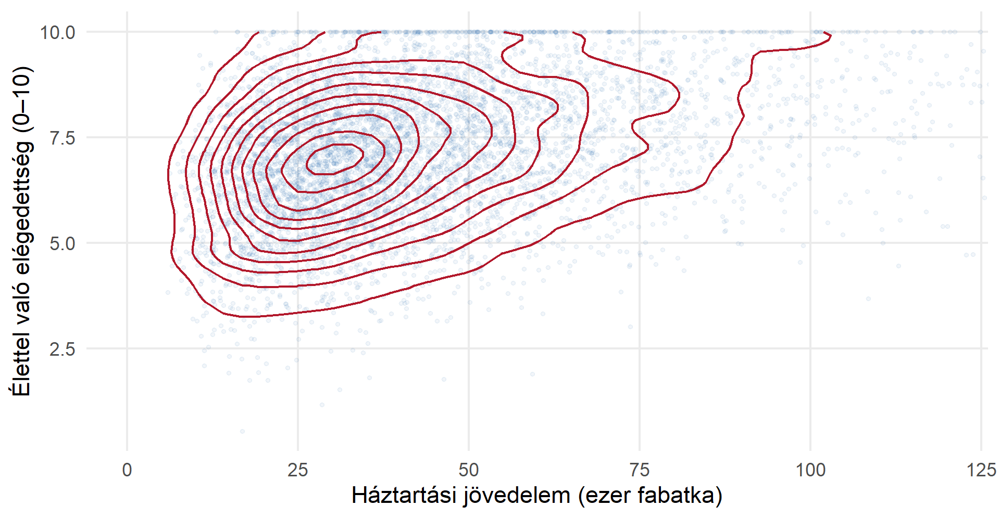
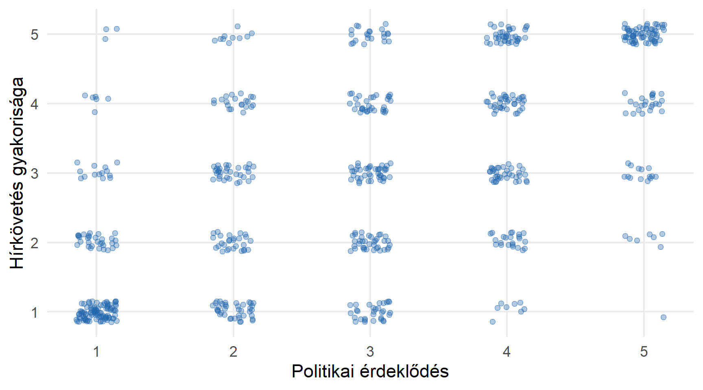
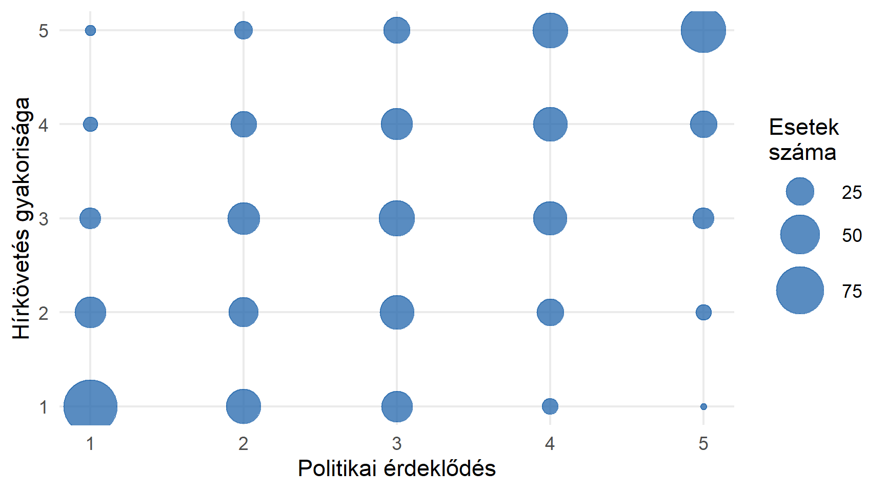
\(X\): iskolai végzettség évei
\(Y\): szubjektív egészségi állapot
\(Z\): jövedelmi szint
Kérdés: változik-e az \(X\)–\(Y\) kapcsolat, ha figyelembe vesszük a jövedelmet?
Ez statisztikai kiigazítás, nem automatikusan oksági „tisztítás”.
A kontroll után gyengülhet, erősödhet vagy előjelet is válthat a kapcsolat.
Ha egyetlen \(Z\) kontrollváltozó van:
\[r_{XY\cdot Z}=\frac{r_{XY}-r_{XZ}r_{YZ}} {\sqrt{(1-r_{XZ}^{2})(1-r_{YZ}^{2})}}.\]
Adott: \(r_{XY}=0{,}60\), \(r_{XZ}=0{,}50\), \(r_{YZ}=0{,}40\).
\[r_{XY\cdot Z} =\frac{0{,}60-0{,}50\ast0{,}40} {\sqrt{(1-0{,}50^2)(1-0{,}40^2)}}\]
\[=\frac{0{,}40}{\sqrt{0{,}75\cdot0{,}84}} =\frac{0{,}40}{\sqrt{0{,}63}} \approx 0{,}504\]
Értelmezés: a lineáris kapcsolat az \(X\) és \(Y\) között a \(Z\)-re való kiigazítás után is pozitív, de ez továbbra sem bizonyít oksági hatást!
Egy vizsgálatban:
\[r_{XY}=0{,}30,\qquad r_{XZ}=0{,}60,\qquad r_{YZ}=0{,}70.\]
Számítsák ki és értelmezzék \(r_{XY\cdot Z}\)-t, \(r_{XZ\cdot Y}\)-t és \(r_{YZ\cdot X}\)-et!
Egy \(Z\) kontrollváltozó mellett a szokásos próba nullhipotézise: \(H_0:\rho_{XY\cdot Z}=0\).
\[t=r_{XY\cdot Z}\sqrt{\frac{n-3}{1-r_{XY\cdot Z}^{2}}},\qquad df=n-3.\]
Általánosan \(k\) kontrollváltozónál \(df=n-k-2\).
A harmadik változó lehet
Spearman-féle és rangkorreláció